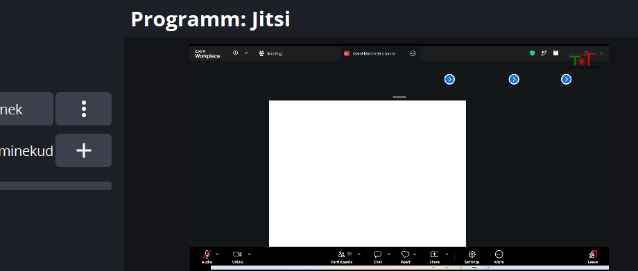

Otsepildis oli video, OBS-i salvestusvaates valge ala
Windowsis valiti OBS Studio aknahõive all Zoom Meeting. BitBlt lubas Zoomi akna valida, aga programmi vaates jäi video asemele valge ristkülik. Zoomi enda aknas oli video nähtav.
Kasutaja valis GDI ja tegi allika uuesti nähtavaks. Valge ala tuli tagasi. Täisekraanil Zoomi salvestamiseks toimivat aknahõive seadistust see katse ei andnud.
